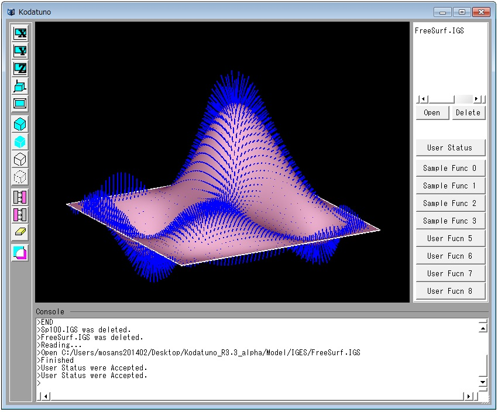

(Ex. 8) 平均曲率法線ベクトルを算出する
曲線や曲面の幾何学は，微分幾何学と呼ばれる分野に属します．「曲率」とは，ざっくり言ってしまえばカーブの緩急を表す指標です．(厳密な定義となると実は結構やっかいです．)
カーブが急なほど曲率は大きくなります．一番分かりやすい例は円です．円の曲率は1/(半径)で与えられます．
では，平均曲率とはなんでしょう．先ほど，「カーブ」という言葉をおもむろに使いましたが，これはいわば曲線のことだと認識してください．3次元空間上に浮かぶ曲線のある1点には「曲率」
という1つの指標が定義できます．次に曲面を考えて見ます．曲線と同様に曲面上のある1点における「曲率」というものを考えた場合，実は無限に存在することになります．
なぜなら，曲面上のある1点を通る曲面上の曲線は無限にあるからです．よって単純に曲率というものを定義できません．そこで，2つの指標がポップに使われています．1つがそう，「平均曲率」，
もうひとつは「ガウス曲率」と呼ばれています．ここではこれ以上の説明は省略しますが，平均曲率は無限にある曲率の最大値と最小値を足して2で割った値になっています．
「平均曲率法線ベクトル」は法線ベクトルの大きさを平均曲率の値として表現したものになっています．
案ずるよりも産むが安しです．実際に"SampleFunc2.cpp"のSmpMeanCurvature()を実行してみましょう．
本例題では，図に示すように，Z方向に平面をZ_minからZ_maxまであるシフト量Dでシフトしていきながら，それぞれの等高線
を求めていきます． ここで，"等高線"と言っていますが，実際には点群によって表現しています． "SampleFunc2.cpp"の
SmpContourLine()を実行します．
＜実行手順＞
- Kodatunoアプリケーションを起動し, 適当なIGESデータを1つ読み込みます．
- 表示されたBodyから面をピックします．ピックする面の数は1個にしてください．
- "User Status"からMode3を選択し，Prop1にU方向の分割数，Prop2にV方向の分割数を入力します．
- "Sample Func 2"ボタンを押します．
- 選択した面上に平均曲率法線ベクトルが生成されたことを確認してください．

＜ソース解説＞
今回はMode3を選択し，"Sample Func2"ボタンを押しました．これによってSmpMeanCurvature()が実行されます．
では，SmpMeanCurvature()を見てみましょう．
// Sample8: NURBS曲面の適当な(u,v)における平均曲率法線ベクトルを算出する
int SmpMeanCurvature(BODYList *BodyList,OBJECTList *ObjList, int PickCount, double Prop[])
{
if(!PickCount) return KOD_ERR; // セレクションされていなかったら、何もしない
NURBS_Func nfunc;
double blue[3] = {0,0,1};
OBJECT *obj = (OBJECT *)ObjList->getData(0); // 一番最初にセレクションされたエンティティの情報を得る
BODY *body = (BODY *)BodyList->getData(obj->Body); // 一番最初にセレクションされたBODYの実体を得る
if(obj->Type != _TRIMMED_SURFACE) return KOD_ERR; // セレクションされた曲面がトリム面でない場合は終了
NURBSS *S = body->TrmS[obj->Num].pts; // BODYからNURBS曲面を取り出す
int udiv = (int)Prop[0]; // u方向分割数
int vdiv = (int)Prop[1]; // v方向分割数
for(int i=0;i<=udiv;i++){
double u = S->U[0]+(double)i*(S->U[1] - S->U[0])/(udiv+1);
for(int j=0;j<=vdiv;j++){
double v = S->V[0]+(double)j*(S->V[1] - S->V[0])/(vdiv+1);
Coord P = nfunc.CalcNurbsSCoord(S,u,v); // 現在の(u,v)上の(x,y,z)を求める
Coord Hn = nfunc.CalcMeanCurvatureNormVec(S,u,v); // 平均曲率法線ベクトルを求める
DrawVector(P,Hn,100,1,blue); // 平均曲率法線ベクトルを表示
}
}
return KOD_TRUE;
}
序盤は概ね問題ないと思います．
19行目と21行目は2.6.5 NURBS曲面を指定した分割数で分割した点を生成するで説明した，NURBS曲面構造体NURBSSの変数で，
NURBS曲面の存在するパラメータ区間を表すU[2]とV[2]を使って平均曲率法線ベクトルを生成する曲面上の点をU，V方向の分割数から割り出しています．
平均曲率法線ベクトルは118行目のNURBS_Func::CalcMeanCurvatureNormVec()によって算出されます．算出されたベクトルの始点を曲面上の点とするために,
23行目では現在注目中の(u,v)の三次元座標値を算出し，24行目で表示しています．
結果の図を見てもらう，急峻なところではベクトルは長く，なだらかなところでは短くなっているのが分かります．
また，上に凸である場合と，下に凸である場合でベクトルの方向が逆になっているのが分かります．
平均曲率法線ベクトルが何の役に立つのかと問われると，回答に困りますが，このような曲面情報をうまく活用することによって，CAM生成アルゴリズムの
一助となる可能性があるわけです．
以上で例題は全て終わりです．次のセクションはこれまでの経験を生かして，簡単なアプリケーションを自分で作ってみる練習問題になっていますので，ぜひお試しください．